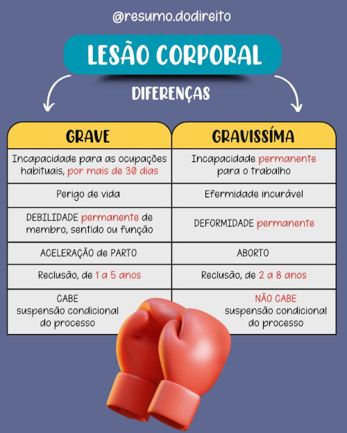
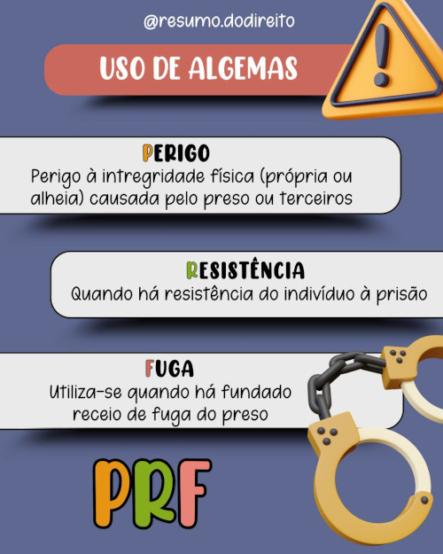

-a caça é permitida no brasil
a caça só é permitida em casos essenciais para proteger plantações e rebanhos e a autorização cabe somente ao Exército. Hoje é permitida apenas a caça do javali, que é uma espécie invasora com grande poder reprodutivo.
Tipicidade
Subordinação direta ou imediata: Sem “intermediários”
Tipicidade por subordinação indireta: A subsunção se dá indiretamente, intermediada por uma norma de extensão. É o que ocorre na tentativa e concurso de agentes.
Tipos básicos e derivados
Tipo básico
Forma mais simples de descrição da conduta típica. Exs: art. 121, caput, art. 155,
Tipo derivado
Formas qualificadas, privilegiadas, majoradas ou minoradas Exs: § 2º, do art. 157; § 2º do art. 121
Tipos de lesão e de perigo
Lesão: a configuração significa uma lesão ao bem jurídico. Ex: arts. 121, 129, 171, 213.
Perigo: a configuração se dá com o perigo ao bem jurídico.
Os tipos de perigo possuem duas classificações. Tipos de perigo individual ou coletivo, e tipos de perigo concreto ou abstrato.
Individual: (arts. 130 até 136)
Coletivo: (arts. 250 até 285)
Concreto:: tipo exige um perigo efetivo: arts. 130, 132
Abstrato: (presumido): tipo presume que a conduta é perigosa: 135, 259.
Tipos instantâneos, permanentes e instantâneos de efeitos permanentes
 Instantâneos: Consumação em um único momento (instante) 121, 155, 213, 317
Permanente: Consumação se prolonga no tempo 148, 159,
Tipos simples e compostos
Simples: Tutela de apenas um bem jurídico. Exs. art. 121: vida; art. 129: integridade corporal
Compostos: Tutela mais de um bem jurídico. Exs: art. 159: liberdade física e patrimônio; art.157: liberdade psíquica e patrimônio